Stromy's imagery draws from the Sage/Creator archetype blend — authoritative, precise, and crafted. Our photography world is defined by architectural structure, industrial materiality, and the interplay of light and shadow on hard surfaces. We never show people, screens, or software interfaces. Instead, we use built environments and worked materials as metaphors for the intelligence systems we orchestrate.
Monumental Scale
Low-angle architectural shots that convey authority. Concrete cantilevers, steel towers, and facade geometry at heroic proportion.
Material Honesty
Close-up surfaces of real materials — corten steel, timber grain, marble, brushed metal. The texture tells the story of craft and time.
Desaturated Warmth
Muted saturation (−45%) anchored by a Deep Forest overlay and amber shadow push. The result is editorial, not cold — warm without being bright.
Rhythmic Structure
Repeating lines, shadows, and geometric patterns that echo the motif family's rail-and-node language. The architecture contains the data.
Controlled Darkness
Deep shadows and night compositions anchor the Obsidian palette. Glass facades at night, silhouetted structures, moody interiors.
Systems Metaphor
Urban infrastructure — rail junctions, pipe networks, aerial views — that reads as "orchestration made visible." The city as a system.
Section 02
Hero Images — Text Overlay Demos
9 hero images with dark gradient overlays, designed for slide covers, brand book sections, and website headers. Each shown with Fraunces heading + Plus Jakarta body text to verify legibility.
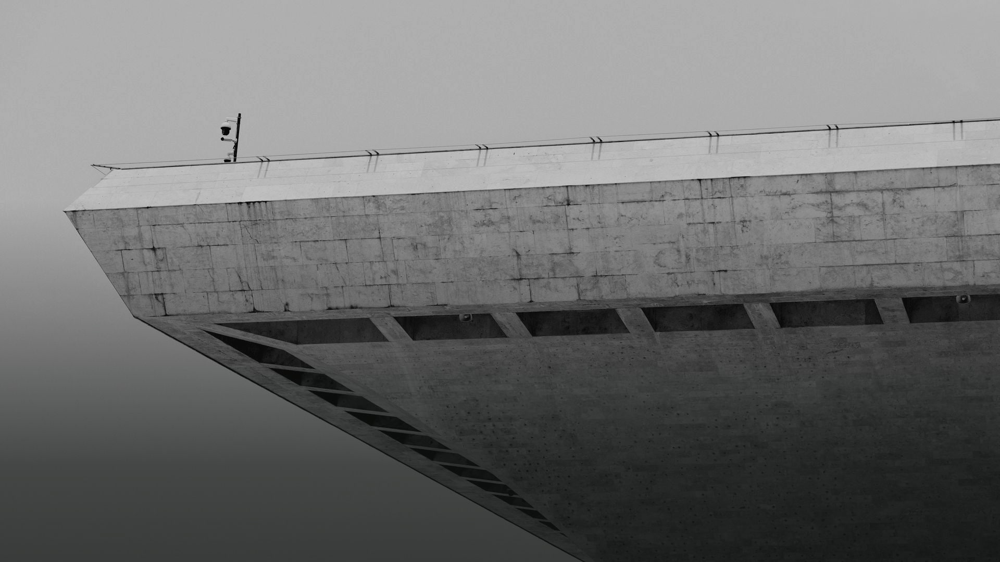
Intelligence, Orchestrated.
AI-augmented analysis for complex decision environments
E02 · Existing
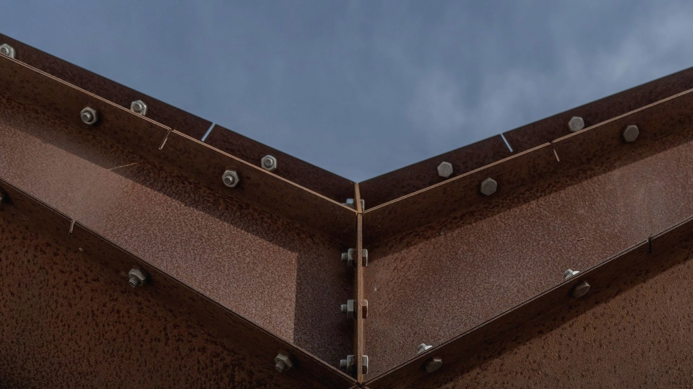
Crafted Through Experience
Decades of institutional knowledge, distilled into systems
OX07 · Oxidized
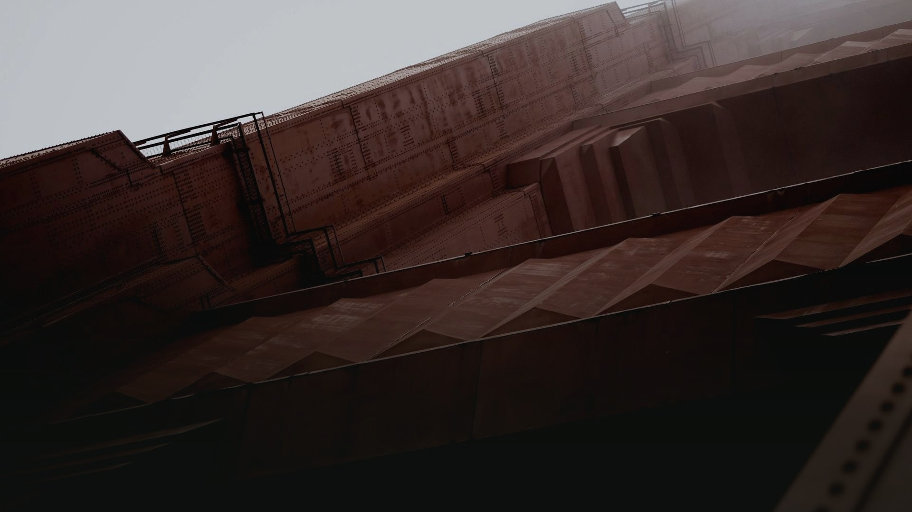
Built to Scale
Infrastructure that grows with organizational complexity
OX11 · Oxidized
Where Structure Meets Vision
Analytical frameworks that reveal what others miss
BR06 · Brutalist
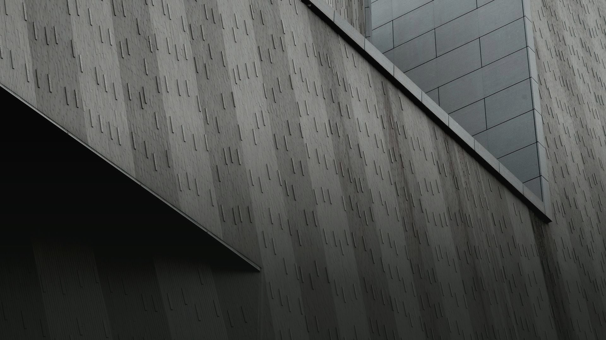
Depth of Understanding
Every layer examined, every signal accounted for
SH03 · Shadow
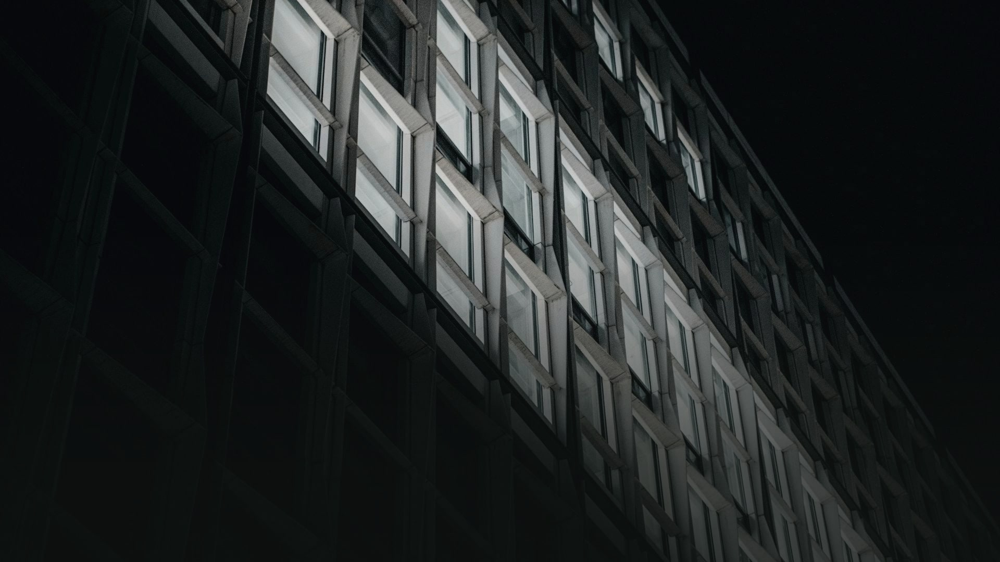
Illuminating Complexity
Clarity in the most intricate information landscapes
DG02 · Dark Geometry
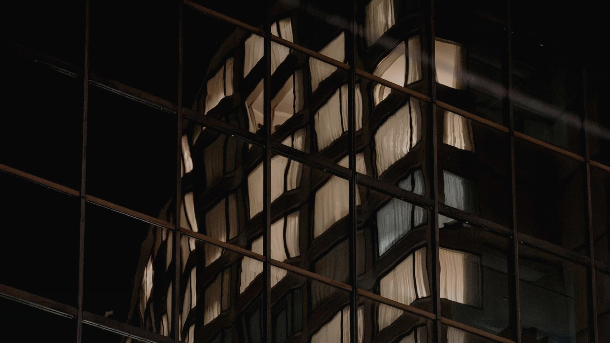
Seeing Through Noise
Multi-source intelligence filtered into actionable insight
DG07 · Dark Geometry
Decisive in Uncertainty
When the stakes are high, precision is not optional
DG08 · Dark Geometry
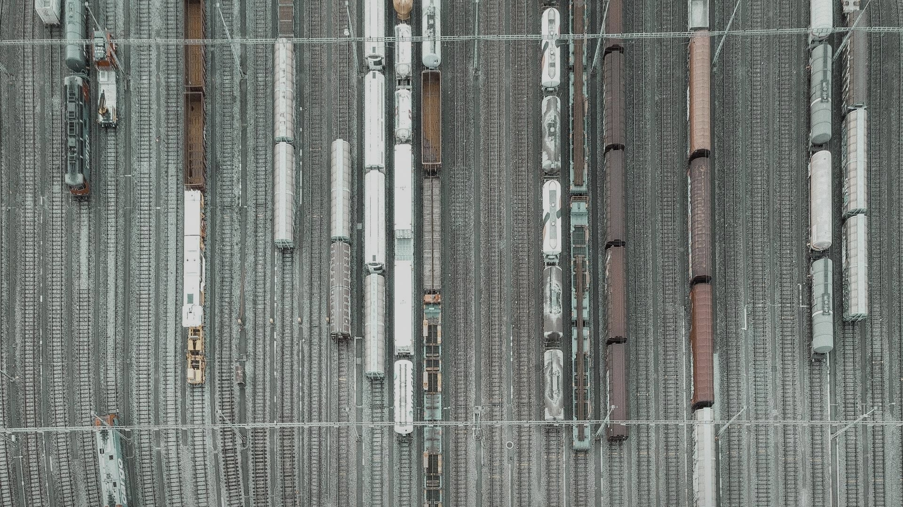
Orchestrating Complexity
Parallel workflows converging at the right junction
US08 · Urban Systems
Section 03
Before / After Processing
Click each image to toggle between the original source photograph and the brand-treated version. Notice the desaturation, warm forest overlay, contrast boost, and subtle grain.
BRAND
02 — Brutalist Geometric (Existing · Hero)
BRAND
16 — Rusted Metal Rivets (Oxidized · Hero)
BRAND
22 — Concrete Curves Sky (Brutalist · Hero)
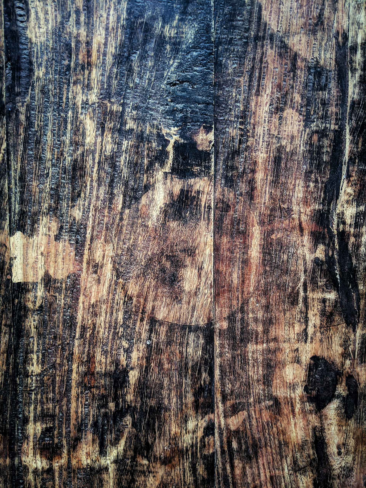
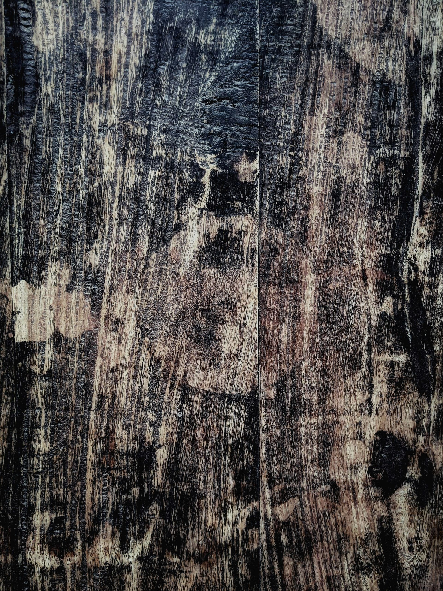
BRAND
32 — Amber Wood (Workshop · Texture)
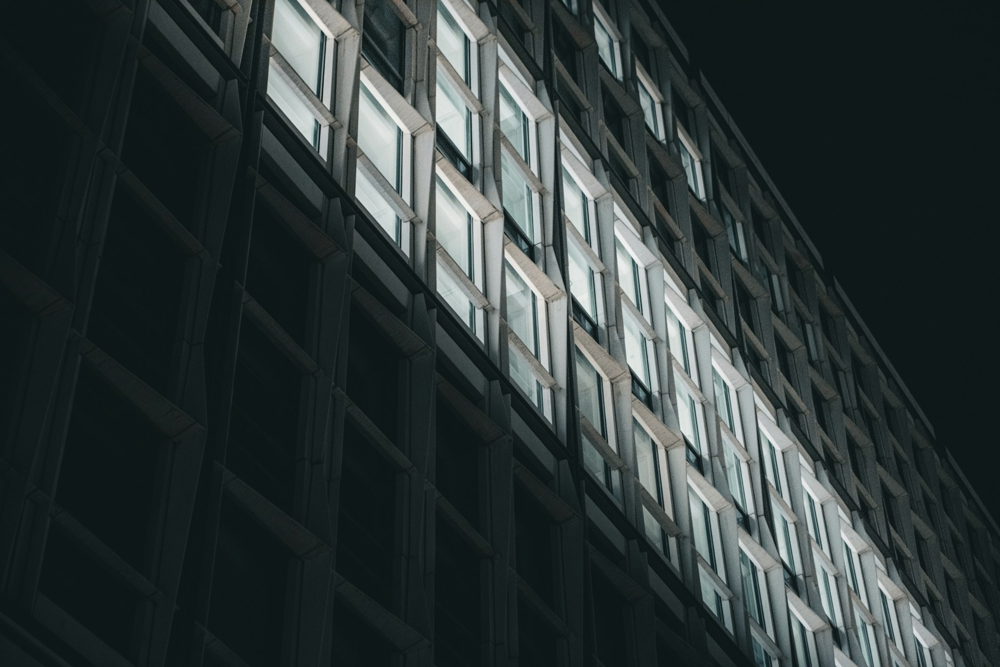
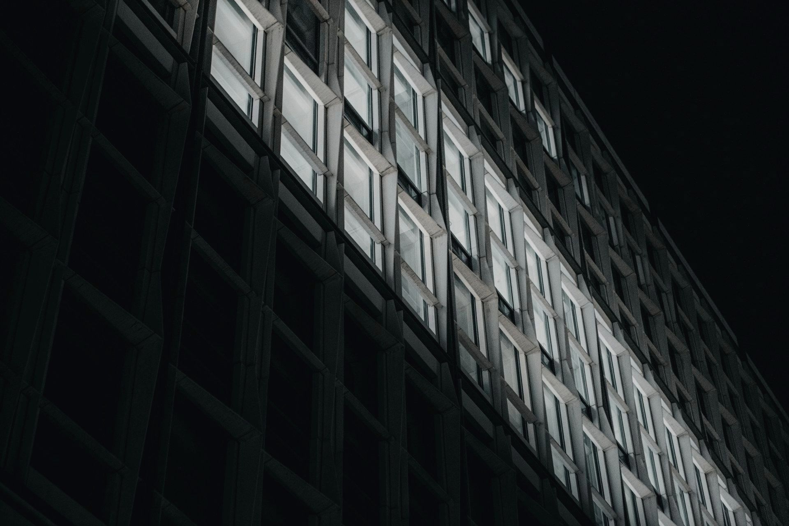
BRAND
35 — Illuminated Windows Night (Dark Geometry · Hero)
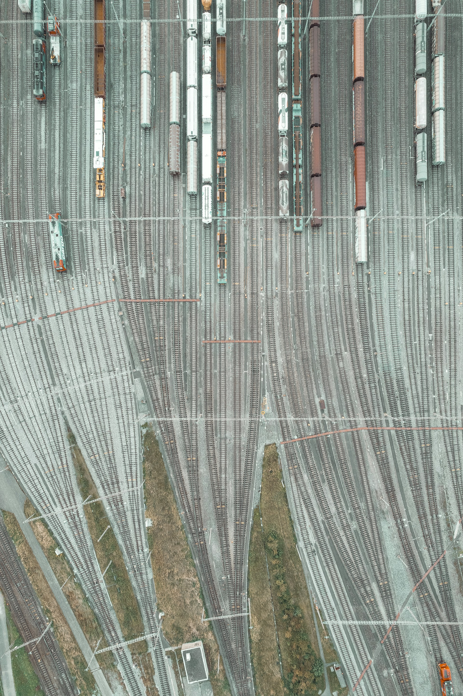
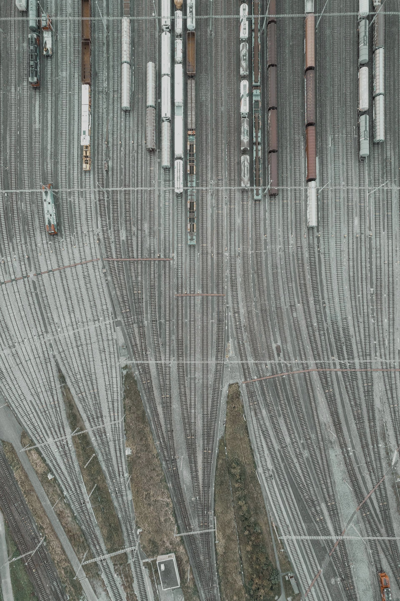
BRAND
41 — Aerial Train Yard (Urban Systems · Hero)
Section 04
Treatment Profiles
Archetype-driven processing parameters for the Sage/Creator brand. These values produce the editorial, desaturated warmth that defines Stromy's visual world.
Parameter
Value
Rationale
Saturation
0.55 (−45%)
Desaturated editorial tone — muted, not monochrome. Lets material textures speak without color distraction.
Contrast Gain
1.18 (+18%)
Elevated contrast for architectural definition. Brings out shadow lines and structural edges.
Forest Overlay
#1D342B at 15% · multiply
Deep Forest tint pushed into shadows, anchoring imagery in the primary brand color.
Warm Shift
rgb(255, 245, 230) at 6% · screen
Subtle amber push — prevents the desaturation from feeling cold. Creator archetype warmth.
Grain
5% · ±13 luminance noise
Editorial texture. Prevents processed images from looking digitally sterile.
Brightness
0.97 (−3%)
Slight pullback to prevent washed-out highlights after contrast boost.
Hero Gradient
Obsidian #0F1310 · 0→65→80% alpha
Bottom-heavy darken for text legibility. Ramp: clear above 30%, linear 30-70%, heavy 70-100%.
Output Quality
88 · mozjpeg
High quality with mozjpeg optimization. Balances file size and detail preservation.
Target Width
1920px
Full HD baseline. Heroes also get 16:9 (1920×1080) and 2:1 (1920×960) crops.
The motif family bridges photography and typography. Line-and-node language drawn from infrastructure metaphors — tempo ledgers, data rails, switch tracks, echo bands.
divider-full.svg — Dark backgrounds
divider-full-white.svg — Dark backgrounds (high contrast)